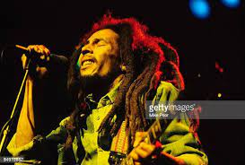
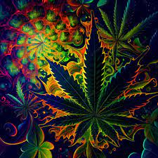

Today 11th may 2023 is a day of celebration in all parts of the world in Honor of the Legend BOB MARLEY who was a reggae musician with many HIT RECORDS SOLD OUT ALBUMS round the world.
Robert Nesta Marley OM (6 February 1945 – 11 May 1981) was a Jamaican singer, musician, and songwriter. Considered one of the pioneers of reggae, his musical career was marked by fusing elements of reggae, ska, and rocksteady, as well as his distinctive vocal and songwriting style. Marley's contributions to music increased the visibility of Jamaican music worldwide, and made him a global figure in popular culture. Over the course of his career, Marley became known as a Rastafari icon, and he infused his music with a sense of spirituality. He is also considered a global symbol of Jamaican music and culture and identity, and was controversial in his outspoken support for democratic social reforms.In 1976, Marley survived an assassination attempt in his home, which was thought to be politically motivated. He also supported legalisation of marijuana, and advocated for Pan-Africanism.
